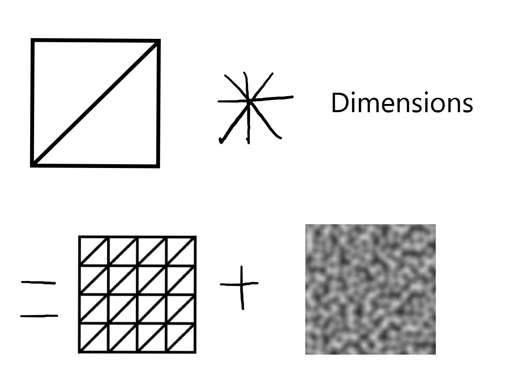
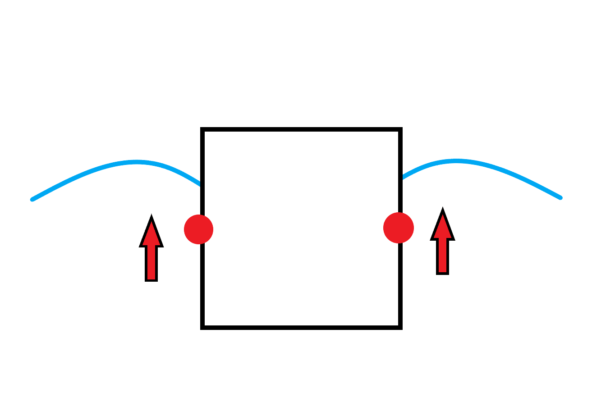
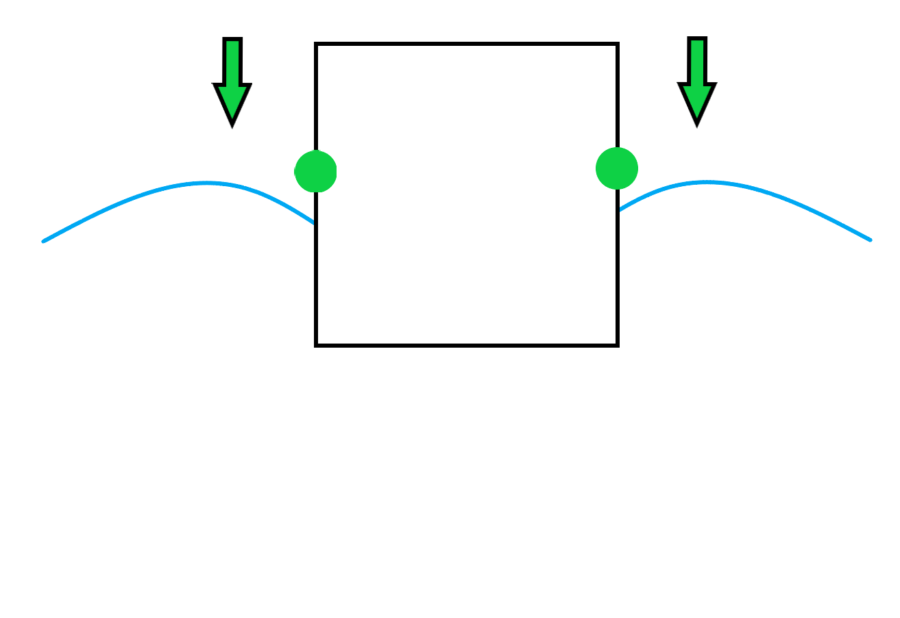
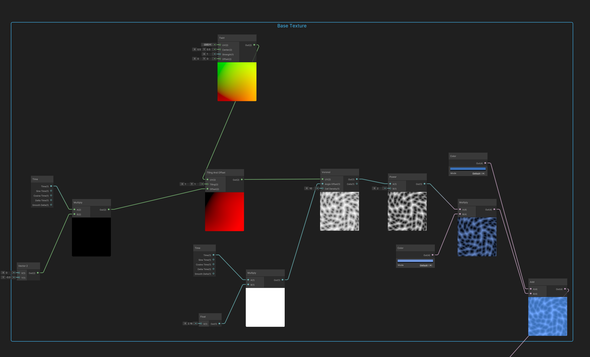

River Shader with Buoyancy
By: Peyton Riley
CIS 536
1
Background Work
- Patreon. (n.d.). Shader Graph Interactive Water(with Refraction/Grabpass, Intersection/Foam lines) | Minions Art on Patreon. https://www.patreon.com/posts/30490169
- Tom Weiland. (2020, May 10). How to Set Up Dynamic Water Physics and Boat Movement in Unity | Ship Buoyancy Tutorial [Video]. YouTube. https://www.youtube.com/watch?v=eL_zHQEju8s
- DitzelGames. (2019, March 2). Water Physics - Unity Ocean Tutorial 3/4 [Video]. YouTube. https://www.youtube.com/watch?v=yEGdYM0nk1I
- Brackeys. (2019, May 19). SIMPLE CARTOON WATER in Unity [Video]. YouTube. https://www.youtube.com/watch?v=Vg0L9aCRWPE

MinionsArt's Interactive Water
MinionsArt's Interactive Water
2
River Mesh and Waves

3

GIF of the river mesh wireframe in Unity
4
Buoyancy Floaters
5

6

7

Buoyancy with Gizmos showing the floater points around the object
8

9
Results
10
11
Demo

Technical Challenges
- Buoyancy as vertex displacement
- Shader in Unity, or model in Blender?
- Moving the objects in the river
- RenderTexture "seam" creating weird results for ripples
12
Questions?
14